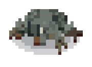
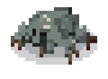
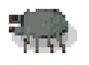
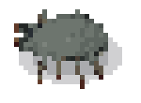

Coral-crawler
A creature of Underwake.
Coral-crawler is a creature of Underwake.
Locations
In the game
In the game the Coral-Crawler is level 45–51, normal. It is found in The White Flats, The Last Shore and The Coral Ridges. It can drop Crawler-Plate Greaves (1%), Eel-Skin Jerkin (1%), Flats-Walker's Boots (1%) and rarely one of 8 rare items.
Quests
Quests that ask for it: Crawlers in the Ribs (behind the level cap), Crawlers on the Coral Heads (behind the level cap), Crawlers at the Far Flats (behind the level cap), Crawlers between the Ridges (behind the level cap) and Crawlers in the North-East (behind the level cap).
Gallery







